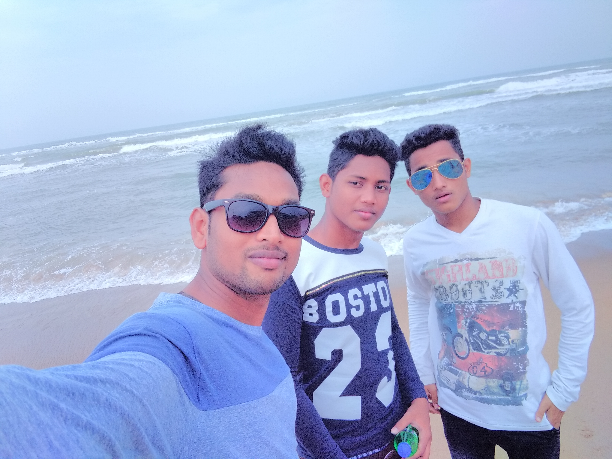
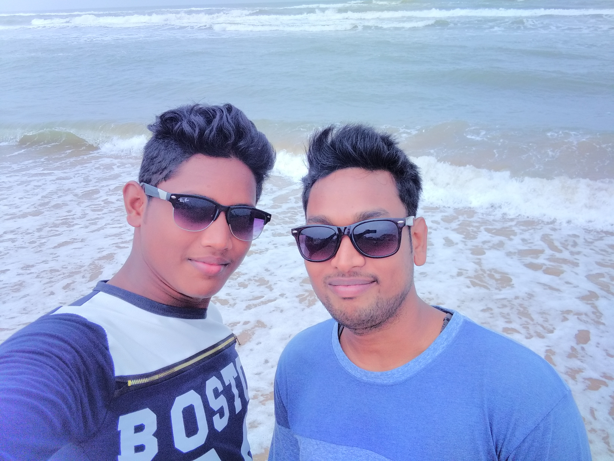
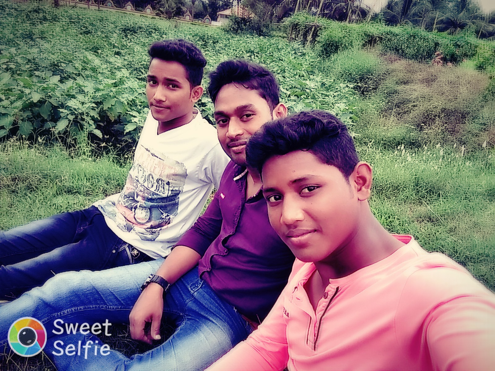
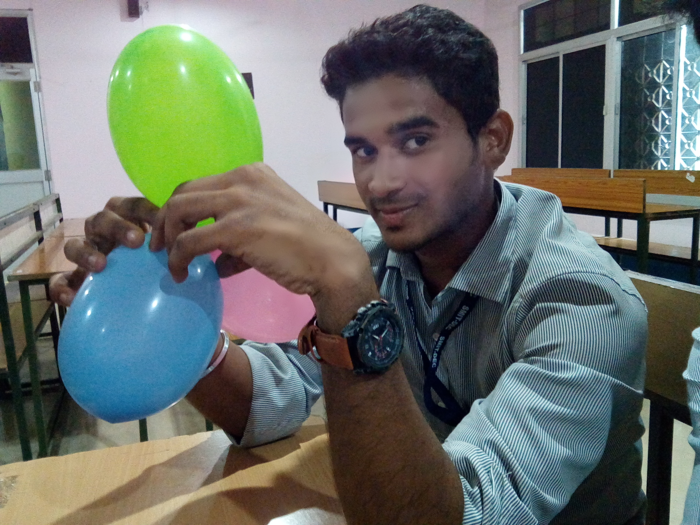
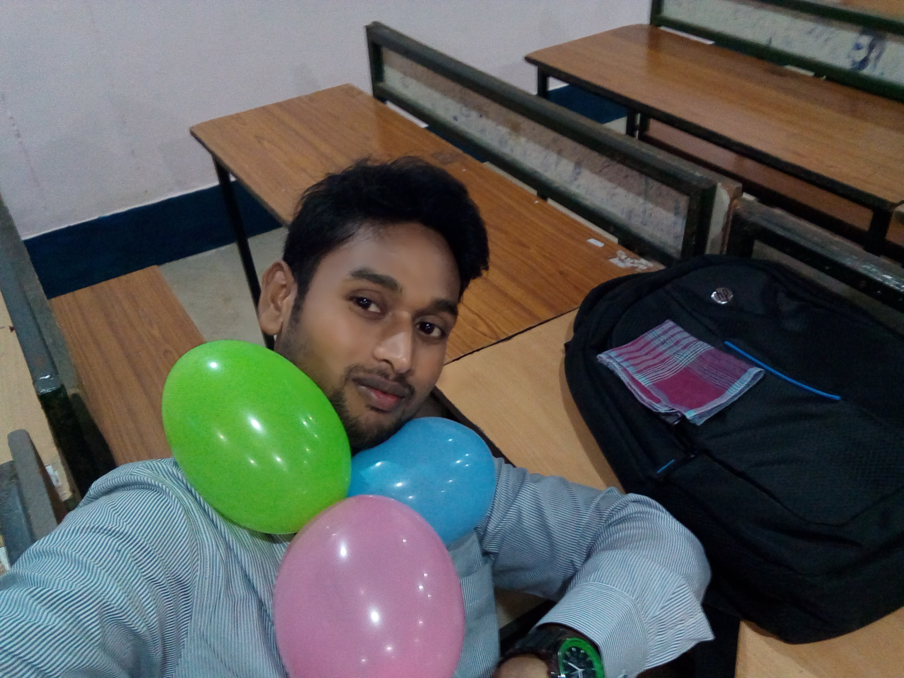
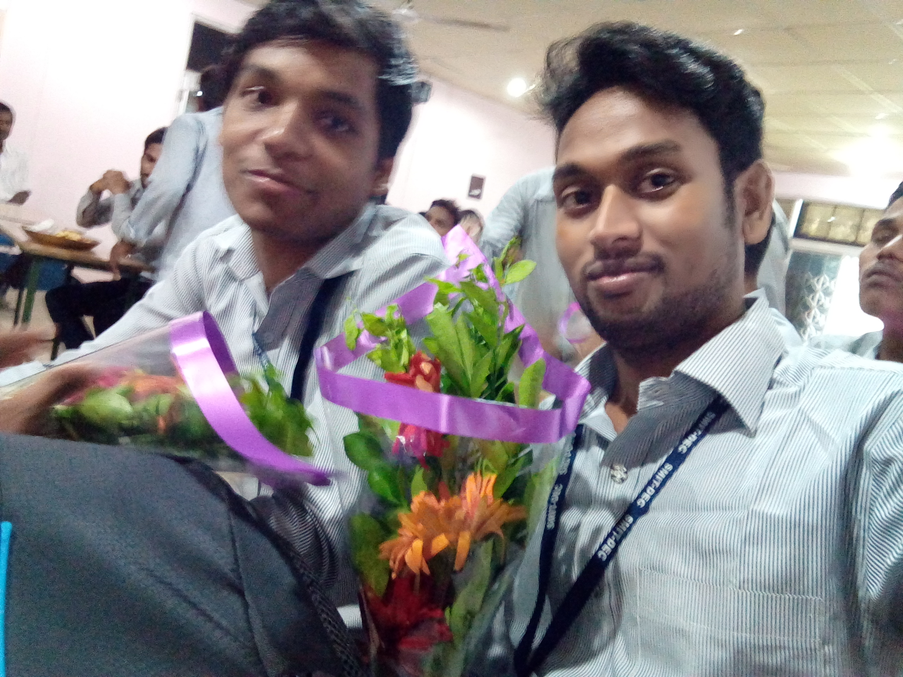
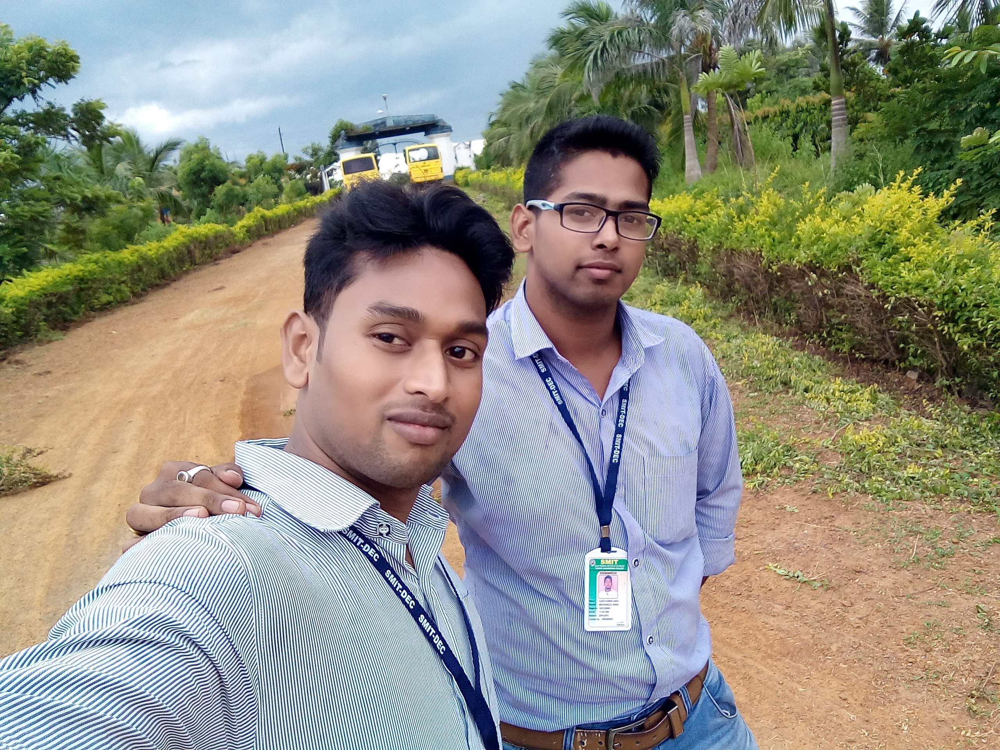

His name is sonu. I still remember the day he was born, so small, so sweet, just like a bundle of soft cotton. He used to cry all the time and sometimes I could not even sleep.
After some time he started smiling at me and touching me. I liked him doing that. Then, when he became a little more old, he started playing with me. First I liked playing with him, but then when he started taking away all my toys, I used to get angry. I still remember how we used to fight over small toys, pulling each other, hitting and then snatching and running away…



sonu ,chootu & gudu
sonu ,chootu & gudu
sonu & chootu
Gudu,sonu & chootu
His name is gudu. I still remember the day he was born, so small, so sweet, just like a bundle of soft cotton. He used to cry all the time and sometimes I could not even sleep.
After some time he started smiling at me and touching me. I liked him doing that. Then, when he became a little more old, he started playing with me. First I liked playing with him, but then when he started taking away all my toys, I used to get angry. I still remember how we used to fight over small toys, pulling each other, hitting and then snatching and running away…
my elder brother
Since our age gap is very less, we were always fighting. To the extent he would watch wwe and try all the pedigree and stunts on me. Well it isn't as horrifying as it sounds. I tried my best to put up with him but alas he would win most of the time. For us winning was who would have a last say in fight aka who would punch or beat the other at last. One time, I guess I was 9-10 years old
Bhaina & Bhai
Bhai
Bhai
Bhai
Since our age gap is very less, we were always fighting. To the extent he would watch wwe and try all the pedigree and stunts on me. Well it isn't as horrifying as it sounds. I tried my best to put up with him but alas he would win most of the time. For us winning was who would have a last say in fight aka who would punch or beat the other at last. One time, I guess I was 9-10 years old
My College Picture
It was in the first year of my college in 2nd semester when i was going to attend the internal(viva-voce) for C++,i left my home for college and instead of taking the regular route i choose the other route,On my way i found my best friend waiting for bus,i saw him and picked him up,when we were about to reach the college he exclaimed MC i am not giving the internal today,i was taken a back,15 seconds later when i come to terms with it he again exclaimed MC you are also not the giving the internal,in complete shock i tried hard to convince him that its sheer stupidity and one must not play with his own career and life but he won't budge,we reached the college and all our friends came to know about this and they also started convincing him,all the students were done with their internal and two of us were remaining,in the utmost weirdness role reversal happened and now he wanted to give the internal and i didn't and he was convincing me,dealing with this complexity we reached to the faculty's




Sunil
Bikram
Sidhanta & Bikram
Ajit & Bikram
It was in the first year of my college in 2nd semester when i was going to attend the internal(viva-voce) for C++,i left my home for college and instead of taking the regular route i choose the other route,On my way i found my best friend waiting for bus,i saw him and picked him up,when we were about to reach the college he exclaimed MC i am not giving the internal today,i was taken a back,15 seconds later when i come to terms with it he again exclaimed MC you are also not the giving the internal,in complete shock i tried hard to convince him that its sheer stupidity and one must not play with his own career and life but he won't budge,we reached the college and all our friends came to know about this and they also started convincing him,all the students were done with their internal and two of us were remaining,in the utmost weirdness role reversal happened and now he wanted to give the internal and i didn't and he was convincing me,dealing with this complexity we reached to the faculty's
my elder brothers videos
Kisama is a village on AH2 highway from Kohima to Imphal, about 10 kilometer south from Kohima, capital of Nagaland state of India. It is famous for "Hornbill festival" which is held from 1 to 10 December every year. From NEC point of Kohima during this festival, taxi fare is 50 rupees per person. This village is located on the slope of a hill about 5400 feet high. There are some permanent residents here but during this festival many people from various part gather here and all the boarding places become full. Some permanent and some makeshift shops and huts are there each representing a local tribe. Some pavillions are for fruits, plants, flowers, orhids and handicrafts of Nagalands. Each tribe's huts also serves their special foods too. There is a stadium where main cultural show of various tribes continues throughout the day upto 10 pm. It is a lifetime experience for me no doubt. I think it is a daylong activity, so one should stay overnight here though boearding facility is very poor.
video1
video2
video3
video4
Kisama is a village on AH2 highway from Kohima to Imphal, about 10 kilometer south from Kohima, capital of Nagaland state of India. It is famous for "Hornbill festival" which is held from 1 to 10 December every year. From NEC point of Kohima during this festival, taxi fare is 50 rupees per person. This village is located on the slope of a hill about 5400 feet high. There are some permanent residents here but during this festival many people from various part gather here and all the boarding places become full. Some permanent and some makeshift shops and huts are there each representing a local tribe. Some pavillions are for fruits, plants, flowers, orhids and handicrafts of Nagalands. Each tribe's huts also serves their special foods too. There is a stadium where main cultural show of various tribes continues throughout the day upto 10 pm. It is a lifetime experience for me no doubt. I think it is a daylong activity, so one should stay overnight here though boearding facility is very poor.

.jpg)
.jpg)
.jpg)
.jpg)